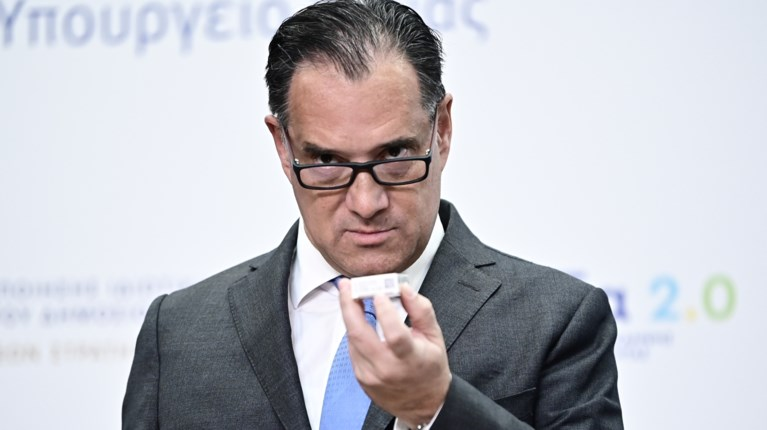

Ψάχνοντας βαθύτερα στο ‘Newsbeast’
Μια εστιασμένη επισκόπηση γύρω από την ενημερωτική πλατφόρμα ‘Newsbeast’ χρησιμοποιώντας την τεχνική του web scraping.
Το συγκεκριμένο άρθρο αφορά την ενημερωτική πλατφόρμα 'Newsbeast'. Το περιεχόμενό της εξετάστηκε με την βοήθεια κώδικα και εργαλέιων τεχνητής νοημοσύνης. Έτσι, ο όγκος δεδομένων που συλλέχθηκε μας επιτρέπει να παρατηρήσουμε ορισμένα μοτίβα και ενα εξάγουμε κάποια συμπεράσματα.
Αναλυτικά, συλλέχθηκαν από την κατηγορία 'ροή ειδήσεων' 500 άρθρα τη 5η Μαΐου 2026 και άλλα 500 την 13η Μαΐου 2026. Με αυτό τον τρόπο, μπορούμε να διακρίνουμε πιο αξιόπιστα την σταθερότητα ή τις διακυμάνσεις που υπάρχουν στις τιμές που συλλέχθηκαν και, ταυτόχρονα, να συγκρίνουμε τα δεδομένα των διαφορετικών εβδομάδων και να βρούμε κάποιες τάσεις.
Από τα 1000 άρθρα, λοιπόν, τα 97 τη μια μέρα και τα 98 την άλλη αφορούν διεθνείς ειδήσεις και δημοσιευονται υπό την σκέπη της κατηγορίας 'world'. Έπειτα, ακολουθεί σε πλήθος η κατηγορία 'sports', με 58 και 65 άρθρα αντίστοιχα. Στο ίδιο εύρος κινούνται οι κατηγορίες 'Greece' με 57 και 59 και 'politiki' με 56 και 47. Έτσι, αυτές οι 4 κατηγορίες από το σύνολο των 16 απαρτίζουν πάνω από το 50% των ειδήσεων της επικαιρότητας στο 'Newsbeast'. Ακόμη, και τις 2 μέρες από τα 500 άρθρα και ,κατά συνέπεια, links που συλλέχθηκαν, τα 19 και 11 links αντίστοιχα δεν παρουσίαζαν ίδια μορφή με τα υπόλοιπα. Ειδικότερα, ψάχνοντας τα συγκεκριμένα 'άρθρα' εμφανίζονταν links από άλλες ιστοσελίδες για διαφημιστικούς σκοπούς. Επομένως, η ιστοσελίδα ανεβάζει 10-20 διαφημίσεις ανά 500 άρθρα ως 'άρθρα'.
Διεθνής ειδησεογραφία
Ξεκινώντας με τα διεθνή, ο Τραμπ φαίνεται να μονοπωλεί το ενδιαφέρον των αρθρογράφων με το όνομά του να αναφέρεται στον τίτλο 19 και 23 αρθρών αντιστοίχως, ενώ, η λέξη 'ΗΠΑ' υπάρχει σε 10 και 12 άρθρα, με τους Ρούμπιο και Χέγκσεθ από 1 και 0 φορές. Είναι χαρακτηριστικό ότι η λέξη 'πόλεμος' χρησιμοποιείται μόνο 1 και 3 φορές στα 200 άρθρα. Περνόντας στην άλλη πλευρά του πλανήτη, η Ε.Ε. εμφανίζεται μονάχα 4 και 0 φορές, η Τουρκία 7 και 3, όπως το Ιράν και η Ρωσία. Το Ισραήλ αναφέρεται 2 και 6 φορές και η Ουκρανία 5 και 6. Τη μεγαλύτερη 'ανωμαλία' σε αυτή την κατηγορία εμφανίζει η Κίνα, η οποία εμφανίζεται 6 και 18 φορές, πράγμα που όμως δικαιολογείται, καθώς κατα την διάρκεια της δεύτερης εβδομάδας συλλογής των δεδομένων πραγματοποιήθηκε το ταξίδι του αμερικανικού επιτελείου στο Πεκίνο.
Είναι αξιοσημείωτο ότι οι μεγάλες ευρωπαϊκές χώρες και οι ηγέτες τους αναφέρονται από 0 εως 2 φορες στα 200 περίπου άρθρα.
Ελληνική πολιτική
Όσον αφορά την ελληνική πολιτική, η αναφορά σε κόμματα είναι ελάχιστη, καθώς το ενδιαφέρον στρέφεται στα πρόσωπα.. Έτσι, ο πρωθυπουργός και ο αρχηγός της αξιωματικής αντιπολίτευσης αναφέρονται 4 και 3 φορές, η Κωνσταντοπούλου 2 και 3 φορές, ενώ η Καρυστιανού 0 και 3 φορές, με την πρόσφατη ανακοίνωση του κόμματός της κατα την δεύτερη εβδομάδα.Οι υπόλοιποι αρχηγοί των κομμάτων δεν αναφέρονται καθόλου(!), με τον Άδωνι και τον Τσίπρα να παίρνουν τα πρωτεία με 9 και 6 και 8 και 6 φορές αντίστοιχα.

Photo: thetoc.grλίστα κατηγοριών
| κατηγορία | 5 Μαΐου 2026 | 13 Μαΐου 2026 |
|---|---|---|
| society | 40 | 49 |
| lifestyle | 51 | 32 |
| greece | 57 | 59 |
| media | 33 | 42 |
| tileorasi | 24 | 29 |
| sports | 58 | 65 |
| politiki | 56 | 47 |
| world | 97 | 98 |
| entertainment | 13 | 12 |
| health | 16 | 25 |
| financial | 34 | 37 |
| woman | 16 | 12 |
| omorfia | 8 | 4 |
| spiti | 1 | 1 |
| moda | 5 | 7 |
| travel | 6 | 11 |